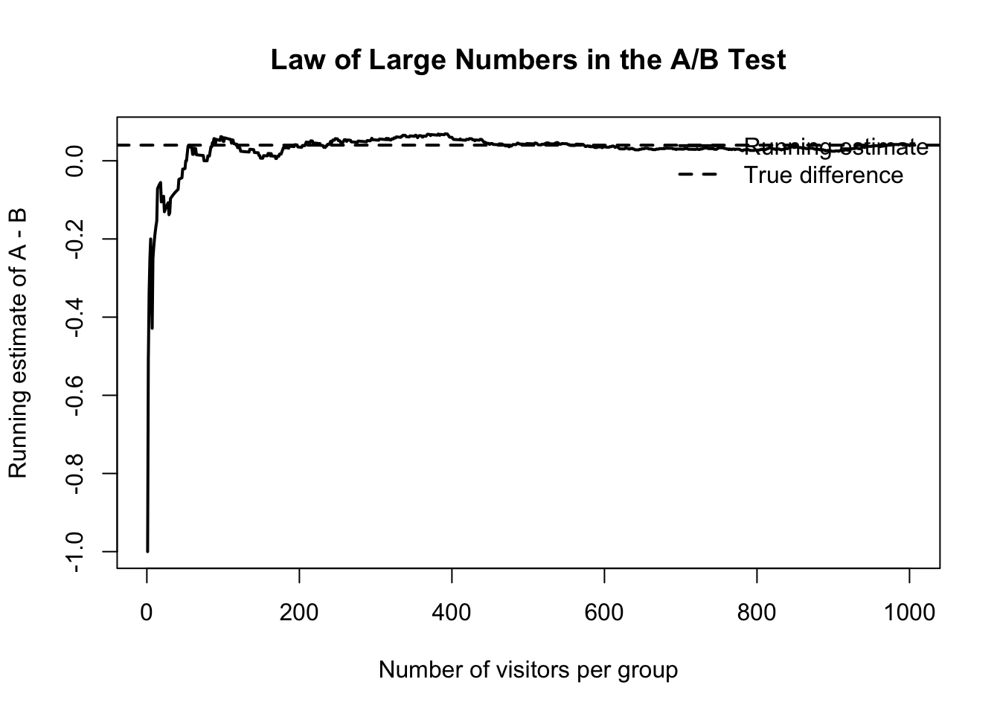
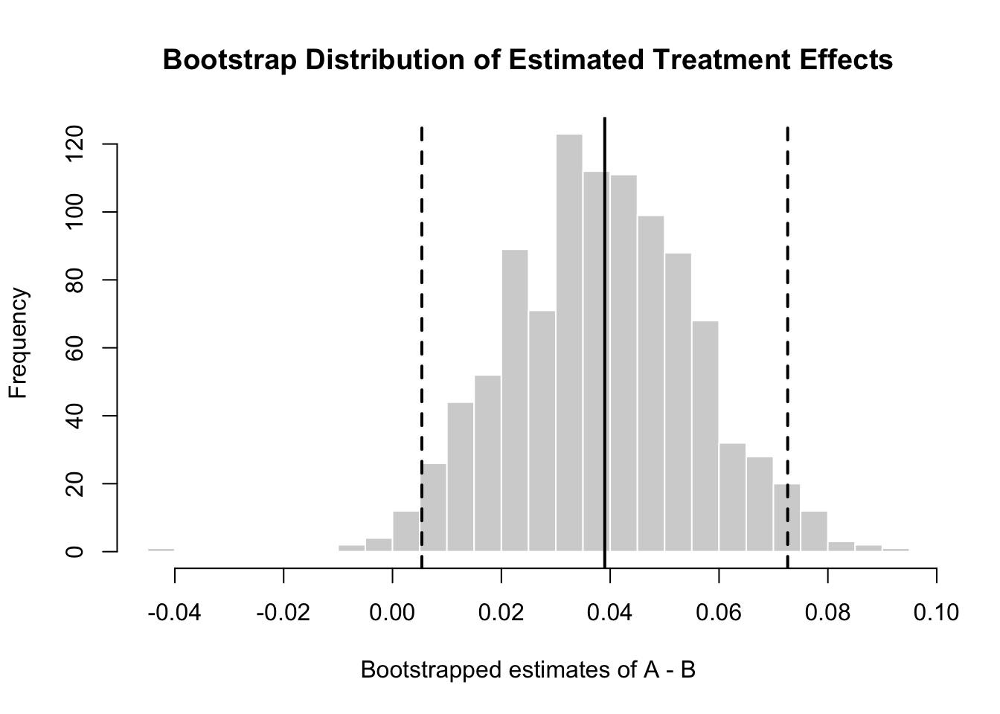
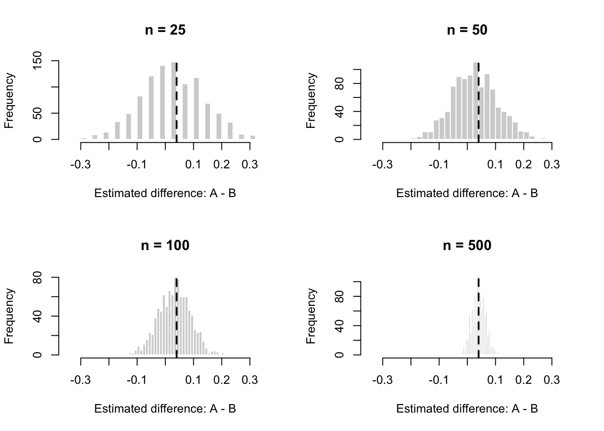

Simulating Key Ideas from Classical Frequentist Statistics
Author
Runyu Luo
Published
April 15, 2026
Introduction
This post uses a website A/B test to introduce several key ideas in classical frequentist statistics. Imagine that I have a website with a landing page where visitors can sign up to receive a newsletter. The page includes a call to action, or CTA, that encourages visitors to complete the sign-up form.
The practical question is whether the wording of the CTA affects the sign-up rate. In this experiment, CTA A says “Sign up for our newsletter here!” and CTA B says “Stay up to date by signing up!” Visitors are randomly assigned to see one of the two CTAs, and I compare the sign-up rates between the two groups.
Although this sounds like a simple comparison, the result of an A/B test is affected by random variation. The purpose of this post is to use simulation to show how frequentist tools such as sampling distributions, standard errors, bootstrap estimates, hypothesis tests, and confidence intervals help us reason about whether an observed difference is likely to reflect a real effect.
The A/B Test as a Statistical Problem
We can model each visitor’s outcome as a Bernoulli random variable. A visitor either signs up, coded as 1, or does not sign up, coded as 0. For CTA A, let the probability of signing up be (p_A). For CTA B, let the probability of signing up be (p_B).
The main quantity of interest is the difference in conversion rates:
\[
\theta = p_A - p_B
\]
If (> 0), CTA A improves the sign-up rate compared with CTA B. If (= 0), the two CTAs perform equally well. If (< 0), CTA A performs worse.
In practice, we do not observe (p_A) and (p_B) directly. We only observe sample conversion rates from a finite number of visitors. This means the observed difference,
\[
\hat{\theta} = \hat{p}_A - \hat{p}_B
\]
is an estimate of the true treatment effect. Frequentist inference helps us understand how much this estimate could vary because of random assignment and sampling noise. It allows us to construct confidence intervals that communicate the uncertainty around our estimate and to perform hypothesis tests to assess whether the observed difference is statistically significant.
Simulating Data
In a real A/B test, I would not know the true sign-up probabilities for CTA A and CTA B. I would only observe whether each visitor signed up and use those observations to estimate the difference in conversion rates. For this simulation, however, I set the true probabilities myself. This lets me study how well the estimator behaves when I already know the truth.
I assume that CTA A has a true sign-up probability of (_A = 0.22), while CTA B has a true sign-up probability of (_B = 0.18). Therefore, the true difference is:
[ = _A - _B = 0.22 - 0.18 = 0.04 ]
This means that, in the simulated world, CTA A is better than CTA B by 4 percentage points.
True values and sample estimates from the simulated A/B test
Group
True_Value
Sample_Estimate
CTA A
0.22
0.211
CTA B
0.18
0.172
Difference: A - B
0.04
0.039
The simulated sample estimates are close to the true values, but they are not exactly equal to them. This difference appears because the data are random. Even when the true sign-up probabilities are fixed, one simulated experiment may produce slightly different observed conversion rates than another. This is why statistical inference is necessary: it helps us understand how much variation to expect when estimating a true effect from sample data.
The Law of Large Numbers
The Law of Large Numbers says that as the sample size grows, the sample average gets closer to the population average. In this A/B test, each visitor’s sign-up outcome is random, so a small sample can produce a noisy estimate. However, as more visitors are included, the estimated difference between CTA A and CTA B should become more stable.
In this simulation, the true difference is pi_A - pi_B = 0.22 - 0.18 = 0.04. In other words, CTA A is truly better than CTA B by 4 percentage points in the simulated data-generating process.
To illustrate the Law of Large Numbers, I calculate the running estimate of the difference in conversion rates as the sample size grows from 1 visitor per group to 1,000 visitors per group.
running_theta <-numeric(n_A)for (i in1:n_A) { running_theta[i] <-mean(A[1:i]) -mean(B[1:i])}plot( running_theta,type ="l",lwd =2,xlab ="Number of visitors per group",ylab ="Running estimate of A - B",main ="Law of Large Numbers in the A/B Test")abline(h = theta_true, lty =2, lwd =2)legend("topright",legend =c("Running estimate", "True difference"),lty =c(1, 2),lwd =c(2, 2),bty ="n")

At the beginning of the experiment, the estimate changes a lot because it is based on very few visitors. As the sample size increases, the running estimate becomes less volatile and moves closer to the true difference of 0.04. This is why larger A/B tests are more reliable than very small experiments: random noise matters less when the sample is large.
Bootstrap Standard Errors
The previous section showed that the estimated treatment effect becomes more stable as the sample size grows. However, in a real experiment, I only get one dataset. I do not get to repeatedly run the same A/B test many times just to see how much the estimate changes.
The bootstrap is a practical way to estimate this uncertainty from the data I already have. The idea is to repeatedly resample from the observed CTA A group and CTA B group, with replacement, and then recalculate the estimated difference each time. The standard deviation of these bootstrap estimates gives a bootstrap standard error.
The bootstrap standard error is close to the analytical standard error. This is useful because it shows that the bootstrap can recover a similar measure of uncertainty without relying directly on a formula for the standard error.

The histogram shows the bootstrap distribution of the estimated treatment effect. Most bootstrap estimates are centered around the observed estimate from the original simulated data. The dashed vertical lines show an approximate 95% confidence interval based on the bootstrap standard error. This helps communicate that the observed difference is not a single perfectly certain number, but an estimate with sampling uncertainty.
The Central Limit Theorem
The Central Limit Theorem says that, under fairly general conditions, the sampling distribution of a sample mean becomes approximately Normal as the sample size grows. In this A/B test, the estimated treatment effect is the difference between two sample means:
[ = {X}_A - {X}_B ]
Even though each individual visitor’s outcome is binary, the distribution of () becomes more bell-shaped when the experiment is repeated many times with a large enough sample.
To demonstrate this, I simulate 1,000 A/B tests at four different sample sizes: 25, 50, 100, and 500 visitors per group. For each simulated experiment, I calculate the estimated difference in sign-up rates.

When the sample size is small, the sampling distribution is wide and irregular because each experiment contains limited information. As the sample size increases, the distribution becomes narrower, smoother, and more centered around the true difference of 0.04. This is the Central Limit Theorem in action: even though the original visitor outcomes are 0/1 variables, the estimator behaves more like a Normal random variable when the sample is large.
Hypothesis Testing
A hypothesis test gives us a formal way to ask whether the observed difference is large enough to be considered evidence of a real difference between the two CTAs.
In this example, the null hypothesis is that the two CTAs have the same sign-up rate:
[ H_0: = 0 ]
The alternative hypothesis is that the two CTAs have different sign-up rates:
[ H_1: ]
Since () is approximately Normal in large samples, we can standardize the observed estimate by dividing it by its standard error:
[ z = ]
If the null hypothesis were true, the estimated difference should usually be close to zero. A very large positive or negative test statistic would be evidence against the null hypothesis.
z_stat <- theta_hat / analytical_sep_value <-2* (1-pnorm(abs(z_stat)))hypothesis_table <-data.frame(Quantity =c("Estimated difference","Analytical standard error","z-statistic","p-value" ),Value =c(theta_hat, analytical_se, z_stat, p_value))knitr::kable( hypothesis_table,digits =4,caption ="Hypothesis test for the difference in sign-up rates")
Hypothesis test for the difference in sign-up rates
Quantity
Value
Estimated difference
0.0390
Analytical standard error
0.0176
z-statistic
2.2190
p-value
0.0265
The p-value measures how surprising the observed difference would be if the null hypothesis were true. A small p-value suggests that the observed difference would be unlikely under the assumption that the two CTAs have the same true sign-up rate.
It is important not to interpret the p-value as the probability that the null hypothesis is true. Instead, it is a probability about the data, calculated under the assumption that the null hypothesis is true. In this simulated example, the test helps decide whether the observed difference is large relative to its sampling uncertainty.
The T-Test as a Regression
The two-sample A/B test can also be written as a simple regression. This is useful because regression provides a flexible framework that can be extended to include additional variables, controls, interactions, or more than two treatment groups.
I combine the CTA A and CTA B observations into one dataset. The outcome variable signed_up equals 1 if the visitor signs up and 0 otherwise. I define a treatment indicator cta_A that equals 1 if the visitor saw CTA A and 0 if the visitor saw CTA B.
The regression model is:
signed_up = beta_0 + beta_1 * cta_A + error
In this setup, beta_0 is the average sign-up rate for CTA B, because CTA B is the reference group where cta_A = 0. The coefficient beta_1 is the difference between CTA A and CTA B:
beta_1 = average(CTA A) - average(CTA B)
ab_data <-data.frame(signed_up =c(A, B),cta_A =c(rep(1, n_A), rep(0, n_B)))reg_model <-lm(signed_up ~ cta_A, data = ab_data)reg_summary <-summary(reg_model)reg_table <-data.frame(Term =rownames(coef(reg_summary)),Estimate =coef(reg_summary)[, "Estimate"],Std_Error =coef(reg_summary)[, "Std. Error"],Statistic =coef(reg_summary)[, "t value"],P_Value =coef(reg_summary)[, "Pr(>|t|)"])knitr::kable( reg_table,digits =4,caption ="Regression version of the two-sample A/B test")
Regression version of the two-sample A/B test
Term
Estimate
Std_Error
Statistic
P_Value
(Intercept)
(Intercept)
0.172
0.0124
13.8331
0.0000
cta_A
cta_A
0.039
0.0176
2.2179
0.0267
The coefficient on cta_A is the same as the difference in sample sign-up rates: CTA A rate - CTA B rate. The intercept is the sample sign-up rate for CTA B. This shows that the basic A/B test and a simple regression are two ways of expressing the same comparison.
The regression framing is especially useful in business experiments because it can be expanded. For example, if the website team later wanted to adjust for device type, traffic source, or visitor segment, those variables could be added to the regression model while keeping the same basic idea.
The Problem with Peeking
In practice, decision-makers often want to check experiment results before the planned sample size has been reached. This is tempting because it feels efficient: if one CTA already looks better, why wait? However, repeated peeking creates a serious problem for classical frequentist inference.
Suppose the team plans to assign 1,000 visitors to each CTA, but the boss wants to check the p-value every 100 visitors per group. If any of the 10 tests is significant at the 0.05 level, she wants to stop the experiment and declare a winner.
The issue is that each test creates another opportunity for a false positive. A single test at the 0.05 level has a 5% chance of rejecting the null hypothesis when the null is true. But if we repeatedly test the accumulating data, the chance of getting at least one false positive across all peeks becomes much larger than 5%.
To demonstrate this, I simulate a world where the null hypothesis is true. Both CTA A and CTA B have the same true sign-up probability of 0.20. Therefore, any significant result is a false positive.
The simulation shows that repeated peeking inflates the false positive rate above the intended 5% level. This happens because the experimenter is no longer conducting one hypothesis test. Instead, the experimenter is giving herself multiple chances to find a significant result.
For A/B testing, this means that checking the p-value repeatedly and stopping as soon as it becomes significant can make weak or nonexistent effects look real. A better practice is to pre-specify the sample size and analysis plan before the experiment begins, or to use statistical methods specifically designed for sequential testing.